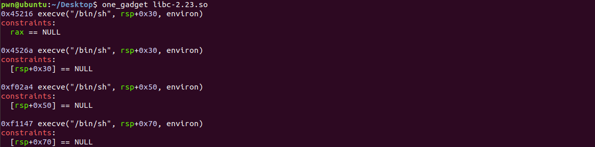
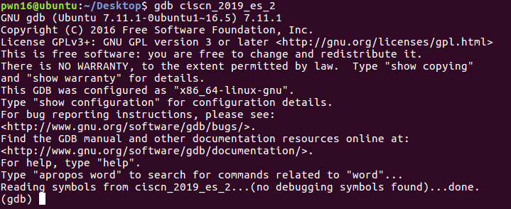
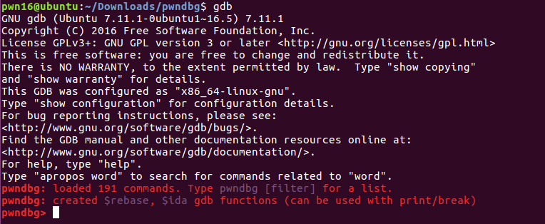

pwn 中常使用的工具
pwntools
pwntools 是一个用 Python 编写的 CTF 框架和开发库，旨在快速构建原型和开发，并旨在使编写利用脚本尽可能简单。
通过以下命令用来安装 python3 下的 pwntools 包：
1 | sudo apt-get update |
以上命令执行完毕后进入 python3 输入 from pwn import *，如下图显示则安装成功。
checksec
checksec 是一个脚本软件，在安装 pwntools 后被顺带安装，可以用来查看可执行文件的程序架构信息和保护信息。如下图使用：
ROPgadget
ROPgadget 这个工具允许你在二进制文件中搜索代码 gadget 片段，以方便 ROP 的利用。ROPgadget 支持 x86、x64、ARM、ARM64、PowerPC、SPARC 和 MIPS 架构上的 ELF/PE/Mach-O 格式。在安装 pwntools 后被顺带安装。以下是常用的 ROPgadget 指令：
1 | 查找可存储寄存器的代码 |
one_gadget
one-gadget 是 glibc 里调用 execve(‘/bin/sh’, NULL, NULL) 的一段非常有用的 gadget。在我们能够控制 ip（也就是 pc）的时候，用 one-gadget 来做 RCE（远程代码执行）非常方便，比如有时候我们能够做一个任意函数执行，但是做不到控制第一个参数，这样就没办法调用 system(“sh”)，这个时候 one-gadget 就可以搞定了。如果你想知道 one-gadget 原理，click here！
通过以下命令安装 one_gadget：
1 | 先安装ruby |
one-gadget 的使用非常简单，比如说希望在某个 libc 中找到某段启动 shell 的 gadget，只需键入以下命令：$ one_gadget libc-2.23.so

可见输出结果不仅仅给出了 gadget 对应的 libc 偏移，还给出了约束，这样只需要控制程序在满足约束的前提下跳转到对应的地址执行 gadget 便可以获得 shell。
libc database search
在进行 libc 基址泄露的时候，常常不知道远程服务器用的是什么版本的 libc，此时便可以通过 libc database search 这个网站来查询所用的 libc 版本，只需要将泄露的函数名和泄露的函数绝对地址或绝对地址的后 12 位填入表单中，点击查找则可以找到可能的 libc 版本。其原理是由于内存分配是以页为单位，而一个页是 4K 个字节，也就是需要用 12 位二进制来存储，所以 libc 在加载到内存中，低 12 位地址是固定不变的。
如下所示：
找到的 libc 有：
同时会提供下载接口和一些常用函数的偏移：
GDB+pwndbg
GDB 全称“GNU symbolic debugger”，从名称上不难看出，它诞生于 GNU 计划，是 Linux 下常用的程序调试器。发展至今，GDB 已经迭代了诸多个版本，当下的 GDB 支持调试多种编程语言编写的程序，包括 C、C++、Go、Objective-C、OpenCL、Ada 等。实际场景中，GDB 更常用来调试 C 和 C++ 程序。而 pwndbg (/poʊndbæg/) 是一个 GDB 插件，它使得用GDB进行调试变得不那么麻烦，且更加专注于底层软件开发人员、硬件黑客、反向工程师和开发人员所需的特性。而 pwndbg 是 GDB 上的一种插件，可以使得调试功能更强大。
GDB 一般在安装 C/C++ 编译套件的时候会被自动安装到系统中，在没有给它装插件的情况下，GDB的运行如下：

可以使用如下命令安装 pwndbg 插件：
1 | git clone https://github.com/pwndbg/pwndbg |
在安装好 pwndbg 后，打开 GDB 如下：

gdb+pwndbg 的常用基本指令：
r：开始运行程序b [funcname/*addr]：在某个函数起始处或某个指令地址处下断点c：继续执行程序ni：单步步过s：单步步入stop：停止执行q：退出gdbstack [num]：查看栈帧info b：查看断点详细信息delete：删除所有断点delete [break point num]: 根据断点号删除指定的断点，用空格隔开可以删除多个断点vmmap：查看程序内存结构aslr on/off：打开/关闭 aslrgot：查看 got 表信息plt：查看 plt 表信息x/[n/f/u] [addr]：查看任意内存位置的值
n：是正整数，表示需要显示的内存单元的个数，即从当前地址向后显示 n 个内存单元的内容，一个内存单元的大小由第三个参数u定义。f：表示 addr 指向的内存内容的输出格式，s 对应输出字符串，此处需特别注意输出整型数据的格式：
x 按十六进制格式显示变量。
d 按十进制格式显示变量。
u 按十进制格式显示无符号整型。
o 按八进制格式显示变量。
t 按二进制格式显示变量。
a 按十六进制格式显示变量。
c 按字符格式显示变量。
f 按浮点数格式显示变量。u：就是指以多少个字节作为一个内存单元 unit，默认为 4。u 还可以用被一些字符表示：
如 b=1 byte, h=2 bytes,w=4 bytes,g=8 bytes.addr：表示内存地址。
演示如：x/22dw 0x0804A220
参考资料：《CTF 竞赛入门指南》、CTF Wiki